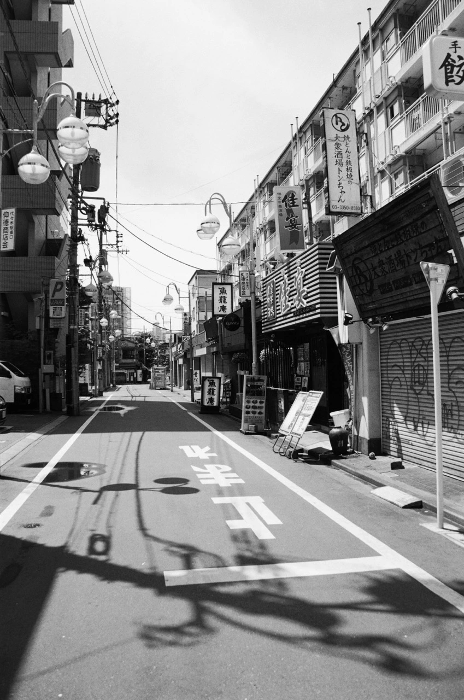

LA GALERIE



Milieu urbain : entre 1980 et 2010, les villes connaissent une profonde transformation. dans les années 1980-1990, les centres-villes sont rénovés et de nouveaux quartiers d’affaires modernes apparaissent. dans les années 2000, les villes se densifient, se connectent davantage et développent les transports durables ainsi que des espaces publics plus agréables.
Je suis une photographe issue du mouvement de la photographie documentaire, active depuis la fin des années 1970 à New York. À travers mon travail, je cherche à témoigner des réalités sociales et à lutter contre le racisme et les inégalités. Mon approche est profondément humaine : je photographie celles et ceux dont les histoires méritent d’être vues et entendues.
Mes œuvres ont été exposées à l’International Center of Photography (ICP) à New York, à la Maison Européenne de la Photographie (MEP) à Paris, et dans plusieurs galeries à travers le monde.
J’ai également collaboré avec des publications comme le New York Times et le Washington Post, poursuivant toujours la même idée : utiliser l’image comme un outil de vérité et d’engagement.